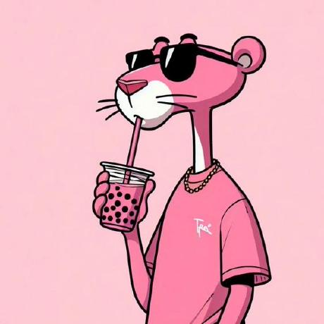

Luka Gabunia Front-End Developer
Self Introduction
Hi, I’m Luka gabunia, a Frontend Developer dedicated to building fast, scalable, and highly interactive digital experiences. I specialize in the React ecosystem, using Next.js to create high-performance web applications and React Native (Expo) to deliver seamless mobile experiences. My focus is on the 'User' side of the stack: translating complex requirements into fluid, functional interfaces. I write clean, type-safe code with TypeScript and build pixel-perfect, responsive designs using Tailwind CSS and Sass/SCSS. I thrive on the challenge of taking a design from a static layout to a living, breathing product that works beautifully on any screen.